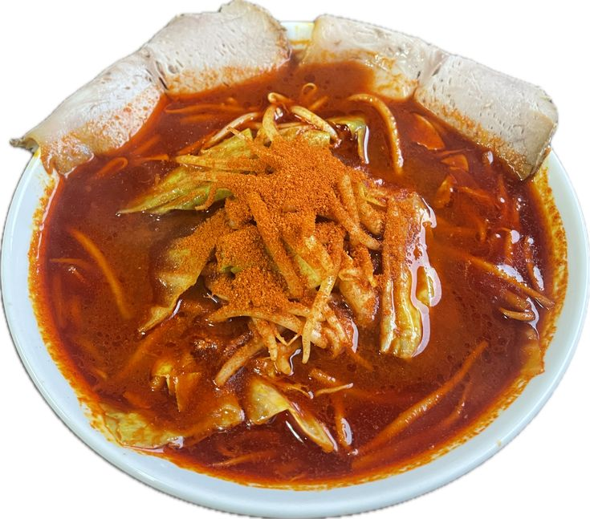
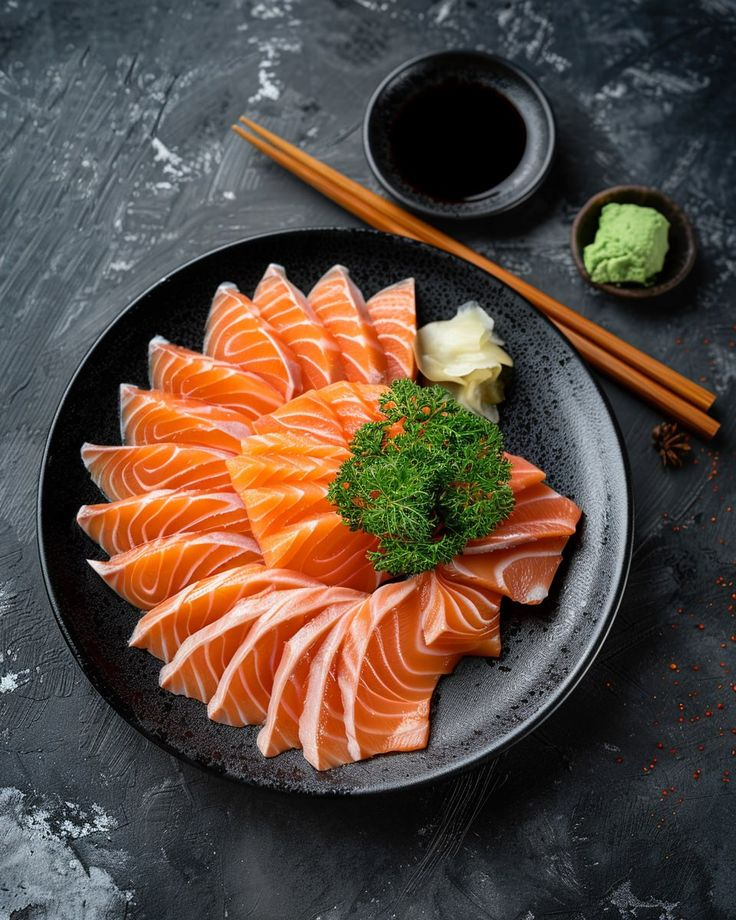
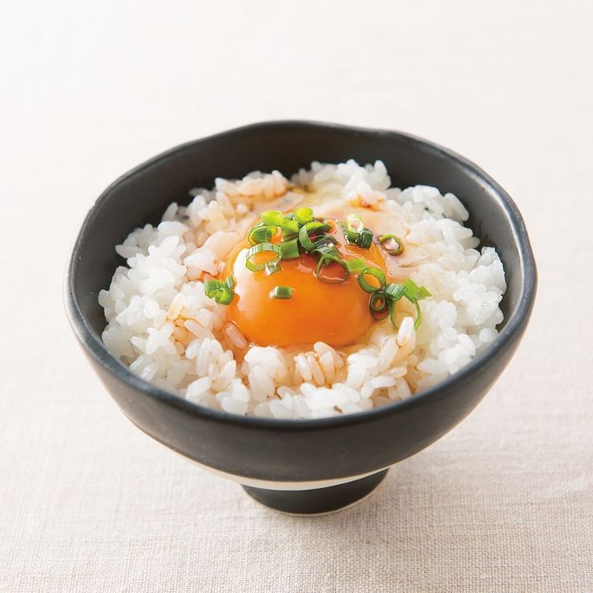
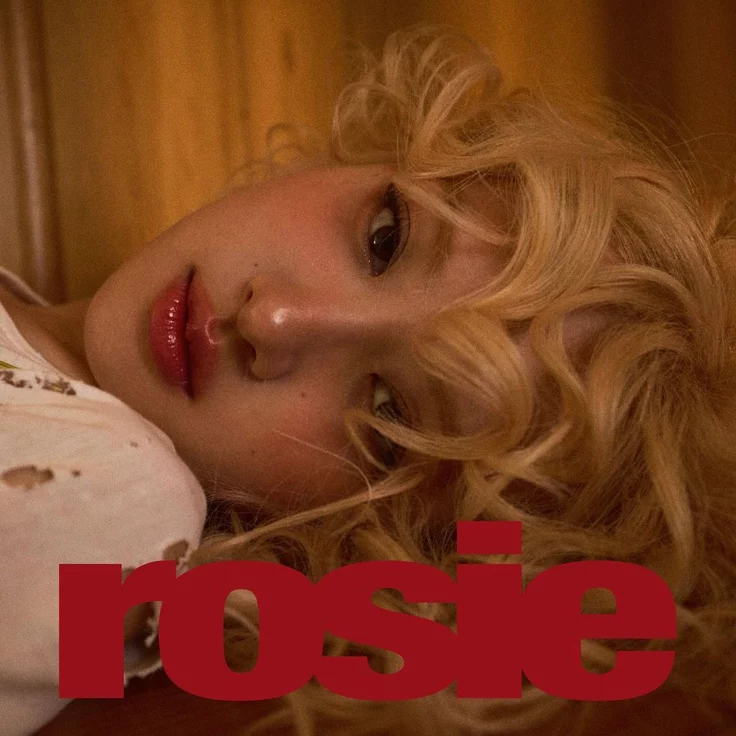
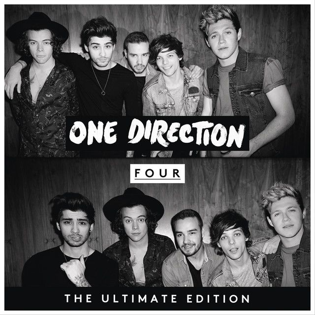
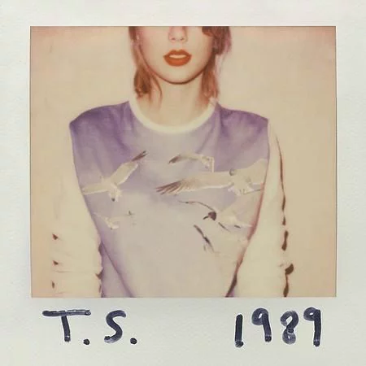
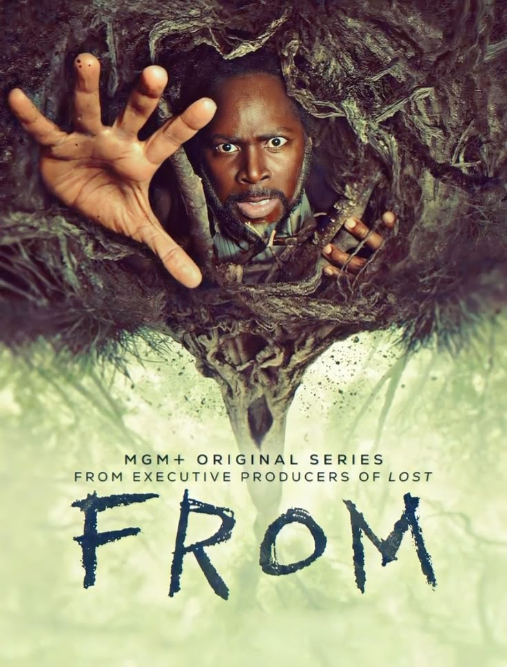
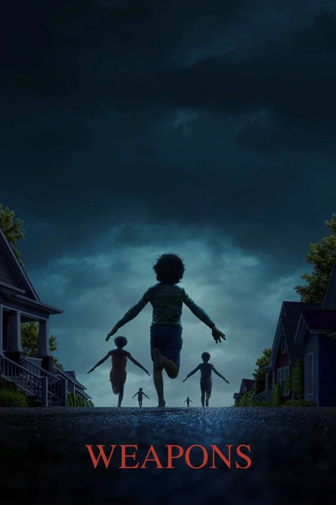
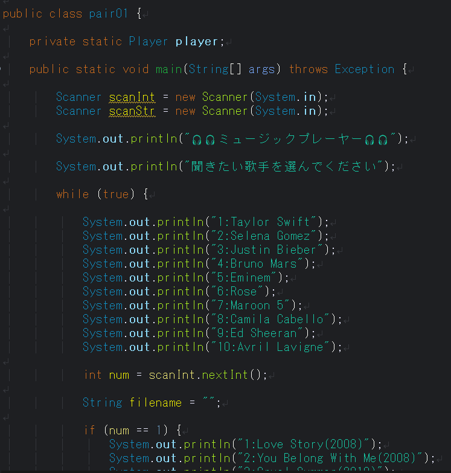

自己紹介
初めまして、愛和システム専門学校の学生トェヨンサンと申します。
ミャンマーから参りました。よろしくお願いします。
好きな食べ物

辛みそラーメン

刺身

卵かけごはん
好きな曲

Gone
Rosé

Night Changes
One Direction

Blank Space
Taylor Swift
好きなドラマ
ボンス

フロン
スーパーナトル

ワェポンズ
好きなゲーム
- Genshin Impact
- Pubg
- Mobile legend
Genshin Impact
Pubg
Mobile legend
制作したプロジェクト

Java Music Player
学校のチーム開発でJavaを使用した音楽プレーヤーを制作しました。 ユーザーが歌手や曲を選択するとMP3ファイルを再生できるシステムです。
使用技術
- Java
- JLayer (MP3再生ライブラリ)
- Scanner
- FileInputStream
工夫した点
ユーザーが選択した曲を再生できるようにし、 次の曲を自動再生する機能やメニュー画面を作成しました。 チームメンバーと協力しながら開発を進めました。
将来の夢
現在
ITを勉強中
次の目標
Java・Web開発を上達する
将来
Web Developer / Software Engineerになる